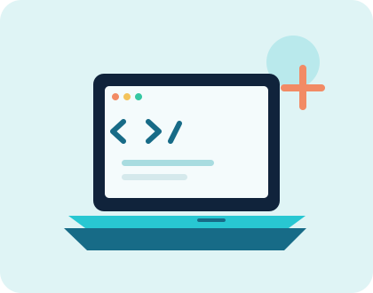

Моє хобі
Створювати сайти й бачити, як ідея оживає
Мені цікаво розбиратися, як влаштовані вебсторінки, і крок за кроком збирати власні проєкти.

Чому мені це подобається
Створення сайтів поєднує логіку й творчість. Можна почати з простої ідеї, описати її звичайними словами, а потім поступово перетворити на сторінку, якою вже можна користуватися.
Зараз я знайомлюся з HTML, CSS, Git і роботою AI-інструментів. Мені подобається бачити результат у браузері та розуміти, які частини сторінки за що відповідають.
Кожен навчальний проєкт дає нагоду спробувати щось нове: додати форму, створити навігацію або зробити інтерфейс зручнішим на телефоні.
Що я використовую
- HTML для структури
- CSS для оформлення
- Git і GitHub для історії змін
- AI як помічника в навчанні
Корисний довідник з HTML можна знайти на сайті MDN Web Docs.